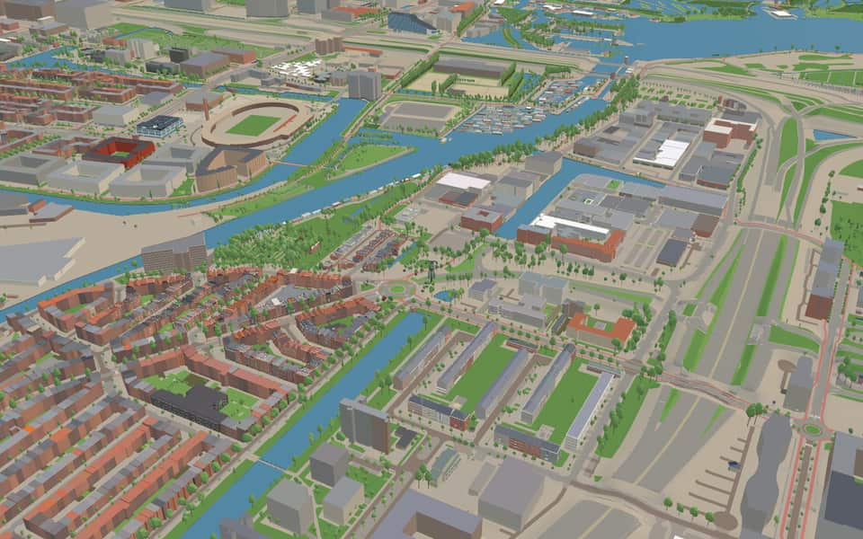
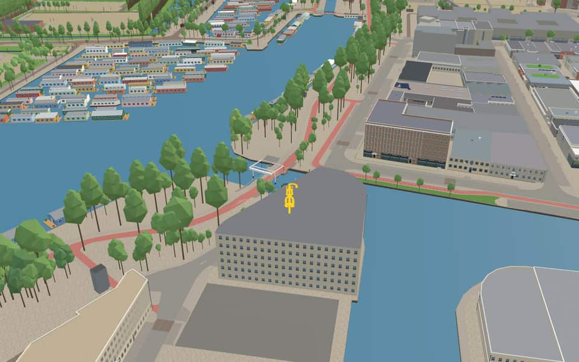
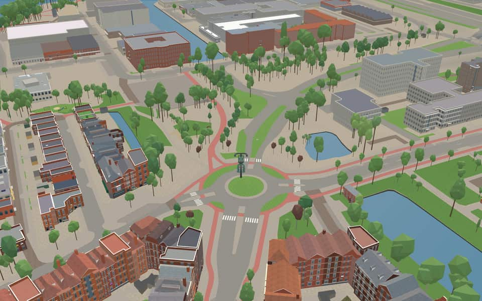

Quarter in Oud-Zuid
Hoofddorppleinbuurt
Hoofddorppleinbuurt is a neighborhood of Amsterdam, Netherlands, part of the borough of Amsterdam-Zuid. Hoofddorppleinbuurt was built in the 1920s. Since 1927 the neighborhood through the Zeilbrug has been connected to Amstelveenseweg. en.wikipedia.org
The name. Its streets are named after 19th-century painters and places south-west of Amsterdam. nl.wikipedia.org


In the game
Frames from a ride through Hoofddorppleinbuurt.



6 more photos of Hoofddorppleinbuurt


Built here
Buildings modelled one by one for the ride.
Nothing here is individually modelled yet: the ride draws Hoofddorppleinbuurt from the city's 3D building register (3DBAG), with real heights and roofs.
Did you know
Trivia the ride can show you here.
- The Haarlemmermeerstraat was laid out in 1927 on land of Sloten, which Amsterdam annexed in 1921. Wikipedia (translated from Dutch)
- Until the Ringweg Zuid opened in 1975, the Aalsmeerweg was the road into town from The Hague and Schiphol. Wikipedia (translated from Dutch)
- The Hoofddorpweg is named after Hoofddorp in the Haarlemmermeer. Wikipedia (translated from Dutch)
- A lamppost on the Riekerhavenbrug was designed by Friso Kramer, son of the bridge's designer. Wikipedia (translated from Dutch)
- RiekerhavenbrugThe Riekerhavenbrug took its name from the Riekerhaven, which itself was named after the village of Rijk. nl.wikipedia.org
- Nieuwe MeersluisThe current lock opened on July 1, 1942 to replace the older Overtoomse Sluis. nl.wikipedia.org
- Nieuwe MeersluisA new control center was later built directly halfway over the old lock keeper's post. nl.wikipedia.org
- Nieuwe MeersluisSliding sluice doors on rails also serve as the carriers for bridge decks. nl.wikipedia.org
- SchinkelA dam blocked the river in 1434 to stop shipping, forcing vessels to take a long detour via Spaarndam. nl.wikipedia.org
- SchinkelIn 1515, a drawbridge called an overtoom was built where only small ships could be pulled across manually. nl.wikipedia.org
- SchinkelUnlike city canals, the Schinkel still actively transports goods today. nl.wikipedia.org
- SchinkelA large community of living boats has settled near the lock on this waterway. nl.wikipedia.org
- WestlandgrachtA nearby sluice separates the urban basin level from the lower polder level of the Slotervaart. nl.wikipedia.org
- AalsmeerwegUntil 1975, this road served as the main access route from The Hague and Schiphol. nl.wikipedia.org
4 more facts
- Henk SneevlietwegA planned railway station was intended for this location but was never built. nl.wikipedia.org
- Henk SneevlietwegA tunnel was built where the road crosses the Ringspoorbaan railway line. nl.wikipedia.org
- Henk SneevlietwegNo house numbers exist on the main stretch of Henk Sneevlietweg itself. nl.wikipedia.org
- HoofddorpwegBefore district divisions, this road belonged to the Overtoomse Veld neighborhood. nl.wikipedia.org
Names on the map
Where the canal, bridge and street names come from.
Canals and water
- SchinkelA schinkel is a short connecting stretch between two weteringen (drainage channels), in this case the Nieuwe Meer and the Overtoom. It is thought the connection owes its name to its shape: 'schinkel' is a synonym of 'schenkel', the lower leg between foot and knee. The quay was earlier called Visserkade by Nieuwer-Amstel. The municipality of Nieuwer-Amstel had named the streets Visserstraat, Alexanderstraat (council decision of Nieuwer-Amstel, 20 October 1882) and Willemsparkstraat (council decision of Nieuwer-Amstel, 30 January 1883), but in 1896 they were changed because of confusion with names that already existed in Amsterdam.
- WestlandgrachtThe region west of Delft, an internationally known horticultural area.
1 other canal without a recorded story
Nieuwe Meersluis
Bridges
- RiekerhavenbrugBridge 307: a movable wooden bridge.
- UiverbrugThe Uiver was the legendary KLM aircraft that took part in the 1934 air race from London to Melbourne and won first prize in the race's handicap section. Like the Uiver, this bridge is made of aluminium.Bridge 2208: a movable reinforced concrete bridge.
Streets
- AalsmeerpleinTown in Noord-Holland, the largest flower centre in Europe.
- AalsmeerwegTown in Noord-Holland, the largest flower centre in Europe.
- AbbenesstraatVillage in the Haarlemmermeer.
- Albert NeuhuysstraatPainter (1844-1914), known among other things for his small domestic interiors from Laren.
- Andreas SchelfhoutstraatPainter (1787-1870) of landscapes and winter scenes. The street came within the boundaries of Amsterdam under the name Bosboomstraat (council decision of Sloten, 21 November 1905), but this name was changed to avoid confusion with the Bosboom-Toussaintstraat, named after Bosboom's wife.
- Anthony FokkerwegAircraft manufacturer (1890-1939). He started out in a workshop in Berlin and later moved his company to Amsterdam. The Dutch Fokker factory supplied aircraft all over the world. In 1996 the N.V. Koninklijke Nederlandse Vliegtuigenfabriek was declared bankrupt.
- BennebroekstraatA village in Noord-Holland.
- Floris VersterstraatPainter (1861-1927), a pupil of Breitner and at first an impressionist. He painted still lifes, portraits and landscapes.
- Generaal VetterstraatJacobus Augustinus Vetter (1837-1907), military commander-in-chief of the expeditions to Lombok (1894) and Aceh (1896).
- GroenendaalstraatAn estate near Heemstede (Noord-Holland).
- HaarlemmermeerstraatThe municipality of that name, formed after the lake was drained in 1852.
- HeemstedestraatA town in Noord-Holland that has grown together with Haarlem.
44 more streets with a story
- HelicopterstraatA rotor aircraft that can rise and descend vertically, built in 1933 by the aircraft maker J. Sikorsky, an American born in Russia.
- Henk SneevlietwegHendricus J.F.M. Sneevliet (1883-1942), politician and an active figure in the trade union movement in the Netherlands and the former Dutch East Indies. Internationally known as a communist for his contacts with China and Russia. As a resistance man he was executed by the Germans.
- HillegomstraatA town in Zuid-Holland, on the border with Noord-Holland.
- HoofddorppleinA village, the main town of the municipality of Haarlemmermeer.
- HoofddorpwegA village, the main town of the municipality of Haarlemmermeer.
- IJsbaanpadNamed after the ice rink on the IJsclub grounds, to which the road leads.
- JaagpadThe name recalls the time of the trekschuit (towed passenger barge), when the barge driver used his horse to pull the boats along the canal. Many waterways (trekvaarten) had a towpath (jaagpad).
- Jacob MarispleinPainter (1837-1899), mainly of landscapes and Amsterdam street scenes.
- Jacob MarisstraatPainter (1837-1899), mainly of landscapes and Amsterdam street scenes.
- KatwijkstraatThe Zuid-Holland fishing village and seaside resort.
- Kromme LeimuidenstraatA village between the Westeinder Plassen and the Braassemermeer in Zuid-Holland. The prefix Kromme (crooked) refers to the shape of the street.
- LaboratoriumstraatAfter the nearby Aeronautical Laboratory (Luchtvaartlaboratorium), where scientific experiments and observations are made for aviation.
- LegmeerpleinA former peat lake, now a polder between Aalsmeer and Amstelveen, drained in 1874.
- LegmeerstraatA former peat lake, now a polder between Aalsmeer and Amstelveen, drained in 1874.
- LeiduinstraatAn estate near Heemstede (Noord-Holland).
- LeimuidenstraatA village between the Westeinder Plassen and the Braassemermeer in Zuid-Holland. The prefix Kromme (crooked) refers to the shape of the street.
- LuchtvaartstraatTraffic by means of air transport (aviation). The name was given because of the nearby Aeronautical Laboratory.
- NaaldwijkstraatThe name of a village in the Westland (Zuid-Holland).
- OverschiestraatThe former village in Zuid-Holland (Overschie), part of Rotterdam since 1941.
- Piet GijzenbrugstraatA bridge over the Leidse Trekvaart near Noordwijkerhout. The name Piet Gijzenbrug passed to the hamlet around the bridge.
- PilotenstraatA piloot is a steersman; here the pilot of an aircraft is meant.
- PropellerstraatThe usual means of propelling aircraft before the rise of jet engines.
- RietwijkerstraatA hamlet near Amstelveen that disappeared when the Amsterdamse Bos was laid out. Originally a village further west, it was drowned in the Haarlemmermeer in the second half of the seventeenth century.
- RijnsburgstraatA town in Zuid-Holland. The street was originally part of the Sloterweg, but this stretch was renamed in 1973, because the city's expansion had split the Sloterweg in two.
- SassenheimstraatThe Zuid-Holland village between Lisse and Warmond.
- SchinkelhavenstraatThe name recalls the old roadside inn Schinkelhaven. Before 1922 the street was part of the Schinkelkade.
- SloterkadeAfter the village of Sloten, which until 1 January 1921 was the main village of the municipality of Sloten, which also included the village of Sloterdijk and the hamlet of Osdorp. The municipality stretched from the Haarlemmermeer to the North Sea Canal and from the Schinkel to Halfweg.
- SpijtellaantjeL.J. Spijdel (born 1844), who set up a small shipyard here in 1885. The lane came into Amsterdam with the annexation of Sloten and was popularly called by this name, which was made official in 1949.
- StolwijkstraatA village east of Gouda (Zuid-Holland).
- SurinamepleinNamed after Suriname.
- SurinamestraatNamed after Suriname.
- Theophile de BockstraatPainter (1851-1904), best known for his nature scenes.
- UiverbrugThe Uiver was the legendary KLM aircraft that took part in the 1934 air race from London to Melbourne and won first prize in the race's handicap section. Like the Uiver, this bridge is made of aluminium.
- ValschermkadeThe Dutch word for parachute.
- VlaardingenlaanA town in Zuid-Holland on the Nieuwe Maas.
- VliegtuigstraatThe means of air transport using lifting surfaces (wings).
- VogelenzangstraatA village in the dune region, on the edge of the Amsterdam water-supply dunes.
- WarmondstraatA village in Zuid-Holland, north of Leiden.
- WeissenbruchstraatHendrik Johannes Weissenbruch (1824-1903), landscape painter, a pupil of Andreas Schelfhout.
- WestlandgrachtThe region west of Delft, an internationally known horticultural area.
- WijsmullerstraatJan Hillebrand Wijsmuller (1855-1925), landscape painter.
- WindtunnelkadeIn a wind tunnel, artificially generated high wind speeds are used to test certain properties of aircraft.
- WoestduinstraatAn estate near Bloemendaal, known for the horse races held there regularly in the early twentieth century, attended by many Amsterdammers.
- WoubruggestraatA village by the Braassemermeer (Zuid-Holland).
3 other streets without a recorded story
Loskade Riekerhaven · Riekerhavenbrug · Zeilbrug